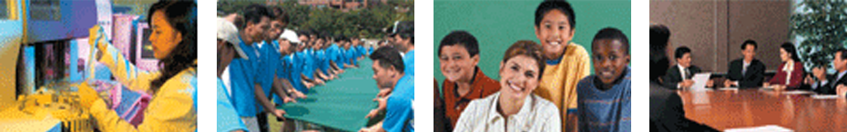

기업하기 좋은 환경조성
- Home
- 투자 강점
- 기업하기 좋은 환경조성
우수한 R&D인프라 및 인력지원
전라북도는 기업이 필요한 우수 인재양성을 위해 기업과 대학, 행정기관이 하나가 되어 만들어진 풍부한 R&D 인프라를 갖추고 있습니다. 기업과 대학이 연계해 고급 기술 인력을 제공하는 산학관 커플링 사업을 활발하게 진행하고 있으며, 특히 300여개의 연구기관과 36개 대학·특성화고에서 기업에 필요한 맞춤형 기술인력 양성에 심혈을 기울이고 있습니다.

- 36개 대학·특성화 고교에서 기술·기능 인력 양성 : 대학(23,000명), 특성화고교(2,000명)
- 전북일자리종합센터 운영 : 스마트폰을 이용한 일자리 실시간 정보제공
- 산·학·관 커플링사업 등 기업 맞춤형 인력양성사업
- 매년 1,100여명 우수인력 양성, 11개 대학 28개 과정, 기업에 필요한 인력양성 1,100여개 기업참여
안정된 노사문화
- 2006년 전국 최조 노사화합 산업평화 선언
- 노사분쟁 발생빈도 전국 최저
- 노사화합 프로그램 공모, 지원 11개 사업장
- 2012 노사협력 우수기관 선정
